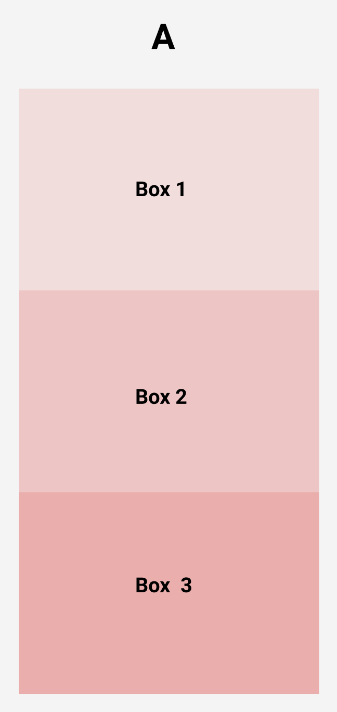
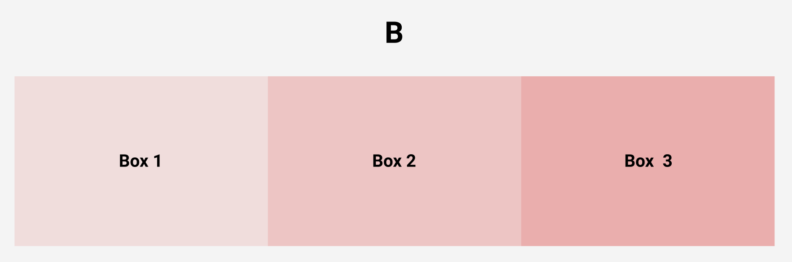

Outdated layout techniques? Reflecting on the Float Method.
I decided to build this site using an older layout technique (principally, the float method) due to some familiarity I had with it. My intention is to now refactor what I have done using the grid CSS property...
Outdated layout techniques? Reflecting on the Float Method.
Maximilon Baddeley
Thu 1 Jul 10:00AM
Web Development
Web Design
The surest way to think about the float property is to first consider the way browsers render elements through a typical default flow. Browsers render the majority of html elements by default as block-level elements. A block-level element, for example, spans the full width of its container and has its height either relative to the hight of its content (text, images, other child elements, et cetera) or has its height pre-set with code. As a result, we can use this behaviour to stack elements on top of one another, like the name implies – as blocks. To illustrate, take the following exercise of stacking three squares of equal width and height on top of one another:
The above code will provide you with a pattern similar to Figure A below:

All is natural in the world. But how, if we do not want verticle-stack arrangements, do we stack elements horizontially as shown in Figure B below?

One option we have available, is float:
div {
width: 150px;
height: 100px;
background-color: red;
float: left; /* you could float left, right, or center */
}
If the browser often stacks elements into block-level verticle stacks such as Figure A above, how do we stack them horizontially? There is another CSS property available to choose from, the display property, however, if we would like to retain the block level property to our elements this is not a good option because one aspect of block level elements is that they contain most of their box-model properties, such as margin. An alternative is available for us when we would like to create horizontially aligned block level items: The float property.
Now having available to us a technique to choose from which aligns elements from verticle to horizontal configurations, we can start to manipulate box model properties and specify the shapes and spaces required of our particular design. For example, for this website, the header was built by using the float method. I did this by first creating a Figure B configuration and then adapting the width of certain elements, namely the logo, nav bar, and button. The below code is only a brief example of what this may look like:
By isolating three boxes and playing around with their dimensions a developer may find ways to create arragnments that work for their particular design. In any case I am happy to have introduced the basic principles of using the float method, albeit just the tip of the iceburg.
Ultimately, the float method is used for older-browser versions. New layout techniques are avaialble for more modern user environments. For example, both flexbox and grid are now considered the industry stantard approaches for laying out web pages. Because of this, my next task in my HTML/CSS learning is to recode this website using both flexbox and grid whilst leaving float in the dust! Thanks for reading.
Iam attending Enspiral Dev Academy's Wellington Bootcamp over the next fifteen weeks to upskill my knowledge and mark my return to code. After being a sociology teacher, researcher and scholar for the past wee while, I am here to become a junior javascript developer and to work in the web industry making digital products.
I have no knowledge of Javascript frameworks and I am really excited to get stuck in and learn how to make modern web applications in both react and node.
This blog is a place for me to explore ideas and leverage my old knowledge of html/css and design and upgrade some of those older ways of doing things into the modern world.